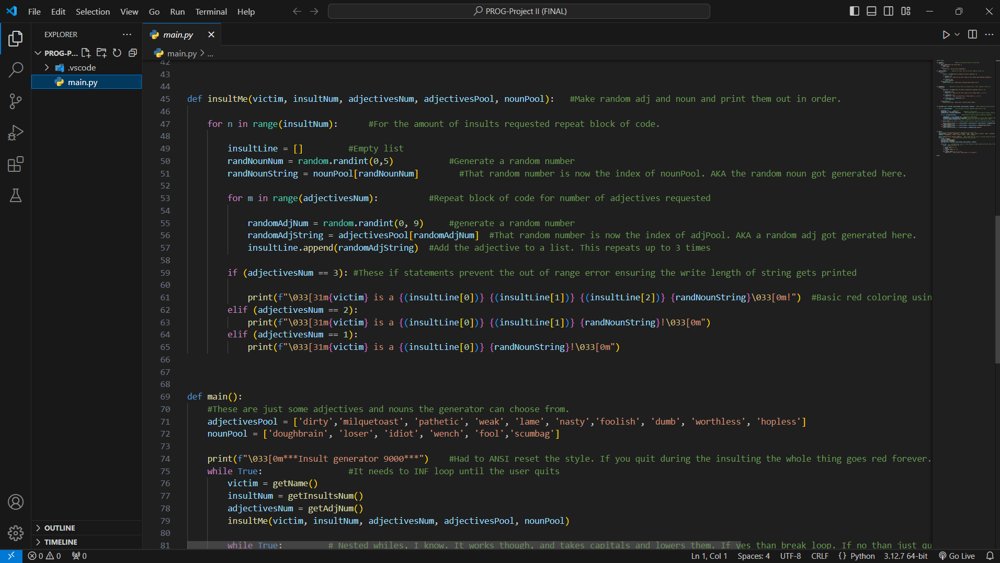
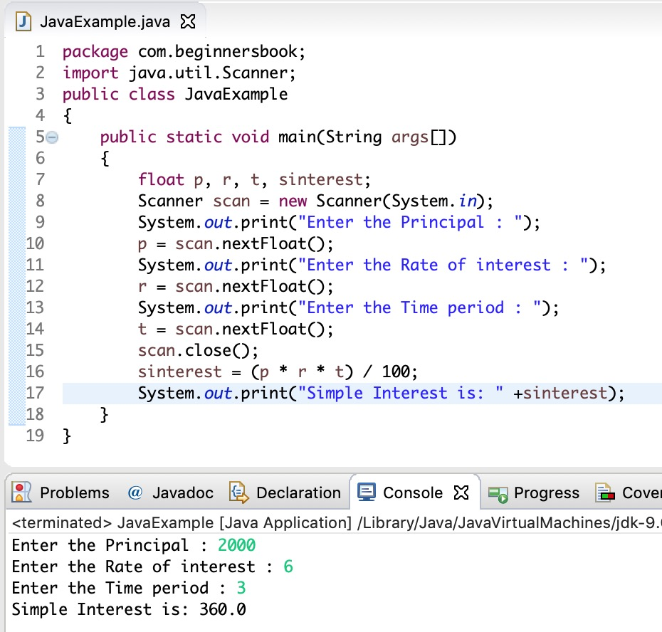

Game Modding
Exploring how functioning programs work and why is a big part of learning the skill.
In my spare time I poke around game files and modify them to change how to the game
works. The mods range from save editing to physics altering, and a few mods have
been published to Nexus Mods. A few games that I have made mods for are Minecraft,
Dying Light 2, Skyrim, and Fallout 4. A lot of the tools used to do this are community
created and therefore have no official name.
Technology used:
- Java
- C#
- xmltest
- SteamDB
- UE-Modding-Tools
Python Programs

The majority of my difficult programming projects are in Python. Python is an easy language to write,
and with that removed difficulty users can focus on creating very complex programs easily. I have made
insult generators (depicted above), calculators, sorters, resizers and various programs that read text.
Technology used:
- Python
- Python SDK
- Visual Studio Code
Java Programs

My first programming language holds a special place in my heart. I have done many projects
in Java, ranging from joke generators to calculators with functioning front ends and error checking.
With my Java skills I went on to create mods for Minecraft.
Technology used:
- Java SE 17
- CodeHS.com
- Stack Overflow